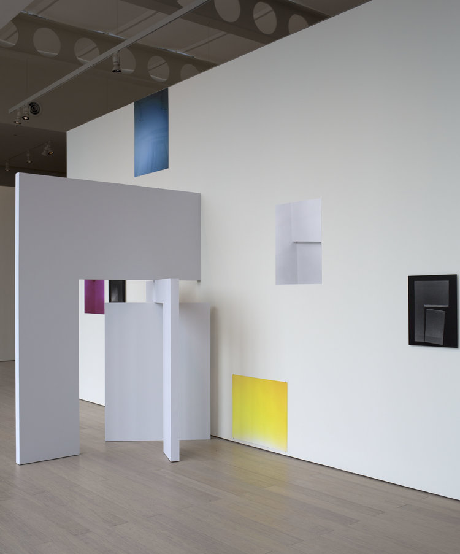
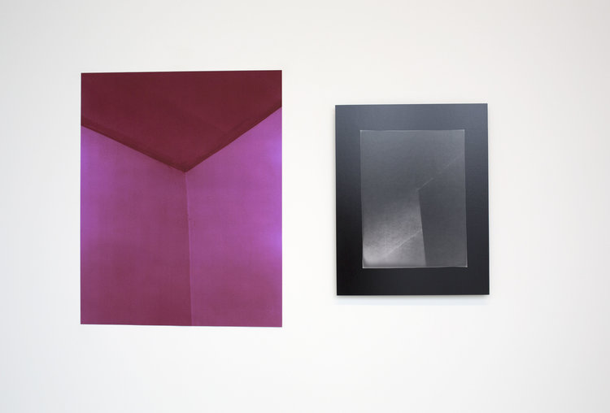
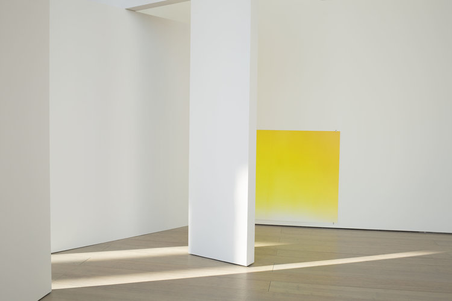
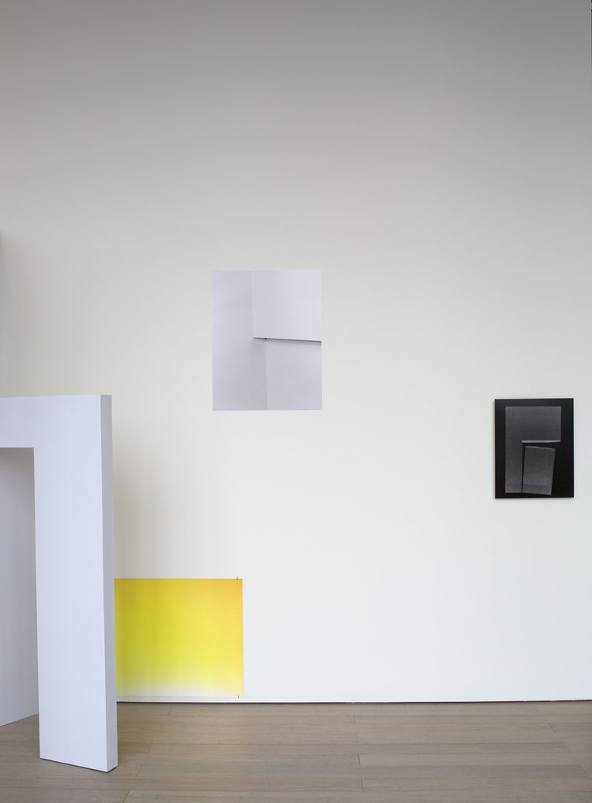
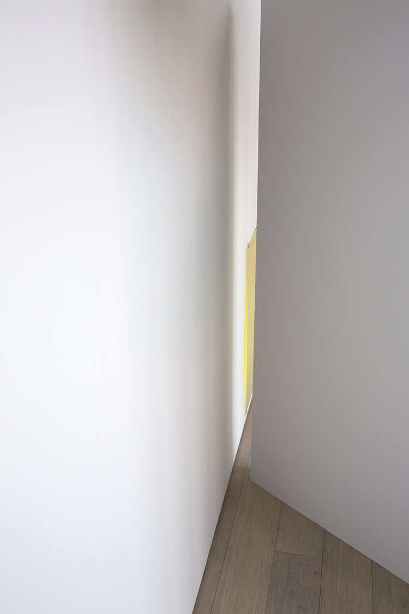
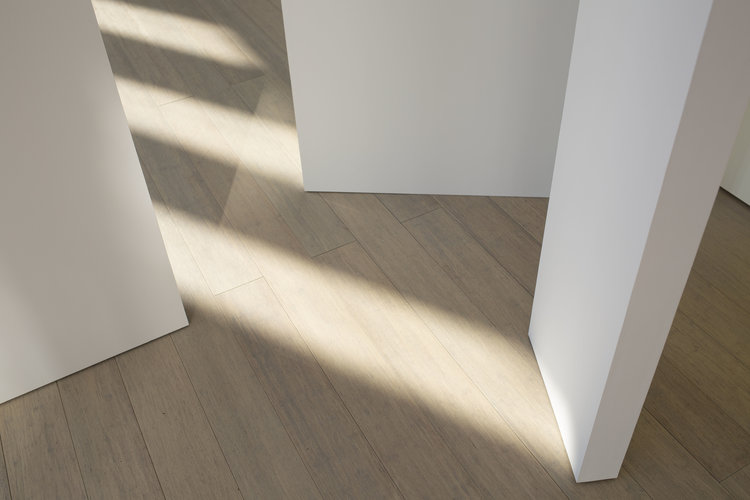
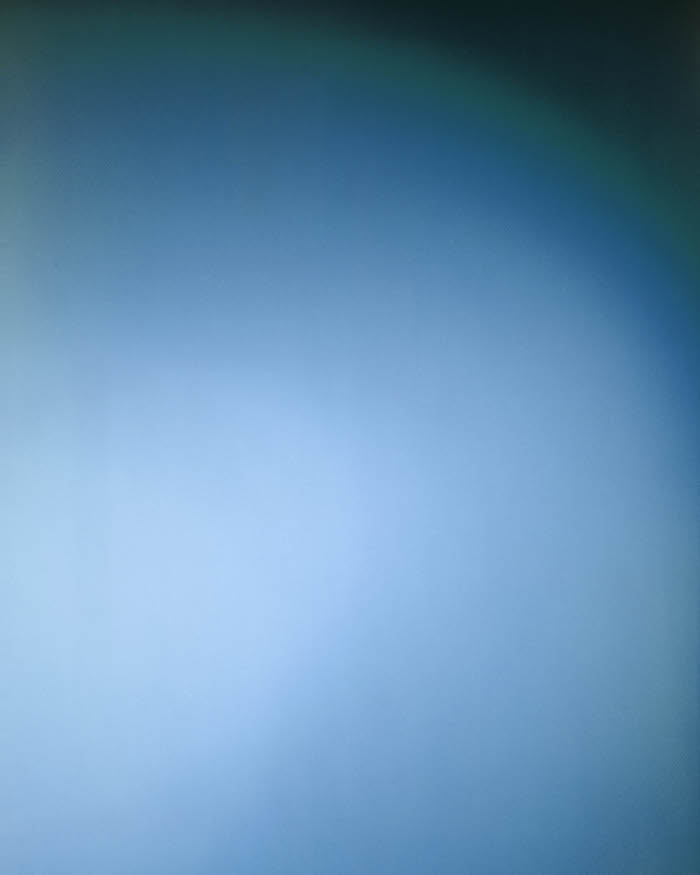
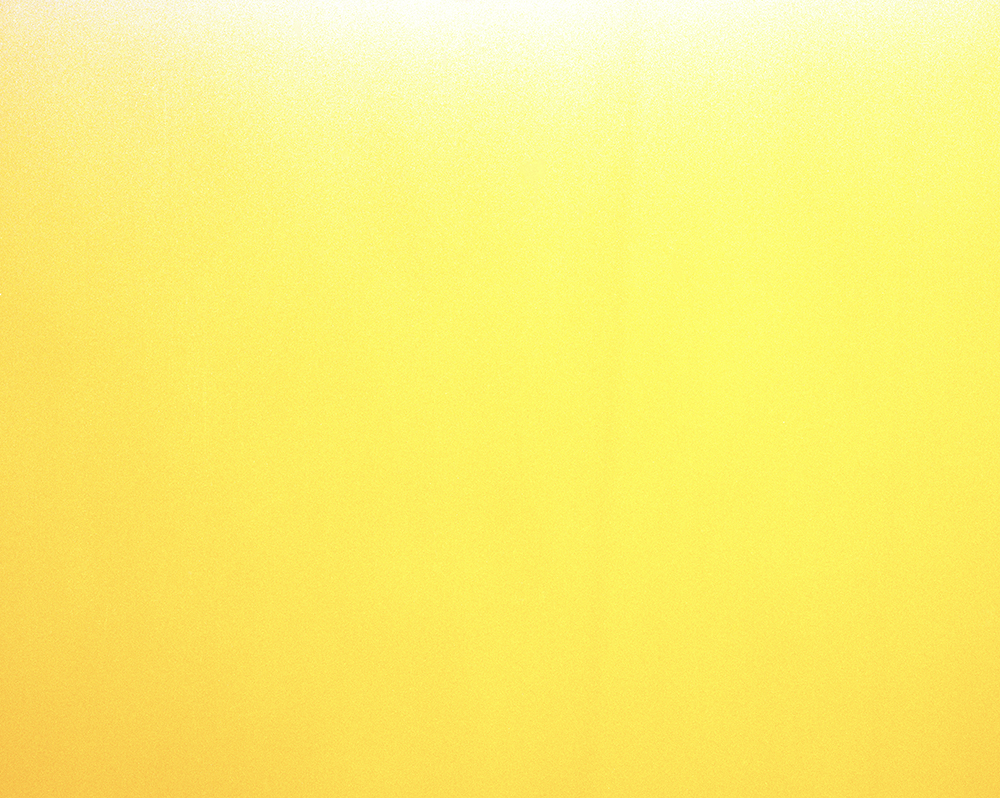

Corners, Installation (20' x 12' x 6'). Lenfest Center for the Arts, New York, 2018
Corners is an installation that explores the construction and deconstruction of meaning through architectural space, sculpture, and photography. It is a reflection on the making of an image. The gallery becomes part of the installation, through the walls and the natural light, as well as being an abstracted subject in some of the photographs. It is impossible to see the installation in its totality from any point of view. The central piece is a wood sculpture based on a photograph of a corner of my home. The measurements of the piece are directly proportional to the original 4x5 negative. Each part of it is created through the dissection of walls and shadows that appear in the original photograph. The pieces can collide in one plane, but instead separate themselves, leaving a gap, becoming a new object that no longer represents the photograph or the original corner, and does not retain an architectural function.
On each side of the sculpture there are three photographs that address diverse ideas and processes. While Blue and Yellow reference the institution, Corner #2 and Corner #3, discuss the everyday life, home, its history through layers of paint, and the bodies that have existed in the space. Shadow #1 and Shadow #3 are photograms, created by placing a xerox printed image on top of photographic paper, giving a sense of relic and displacement.
The entire installation references primary colors, the colors being added through singular processes. The color of Blue was added digitally. The magenta color in Corner #2 comes from scanning a black and white negative as a color negative. Yellow is the only one in which the color comes directly from the space - the staircase of the gallery.






